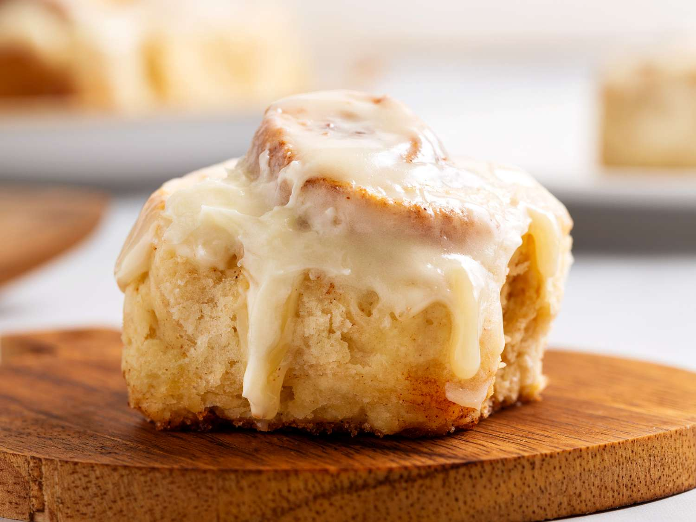
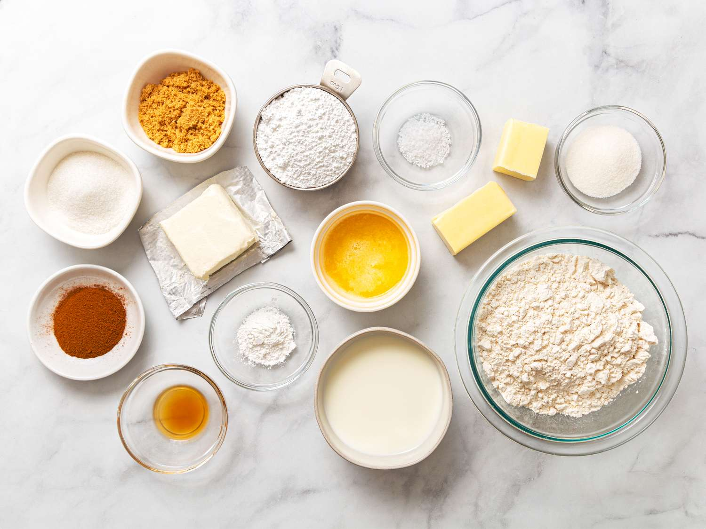
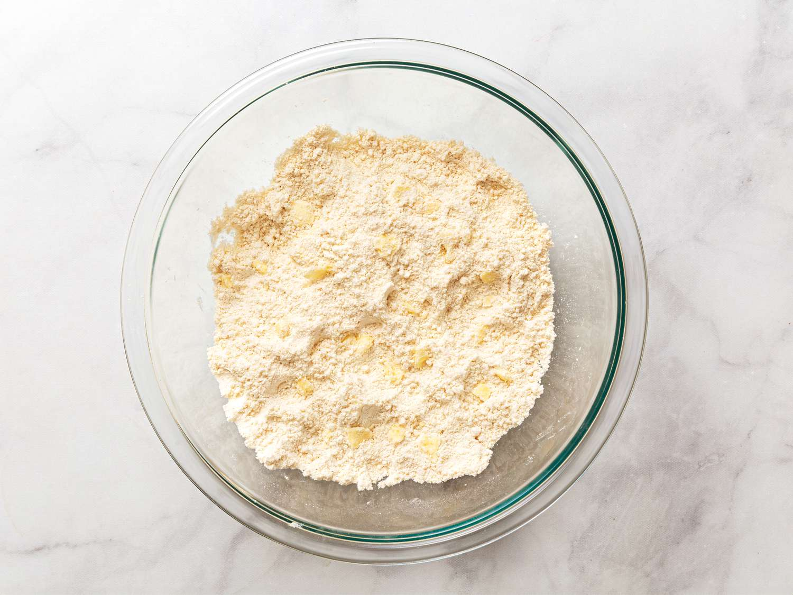
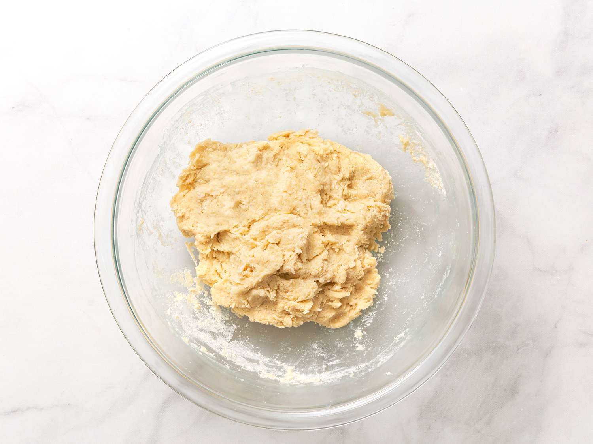
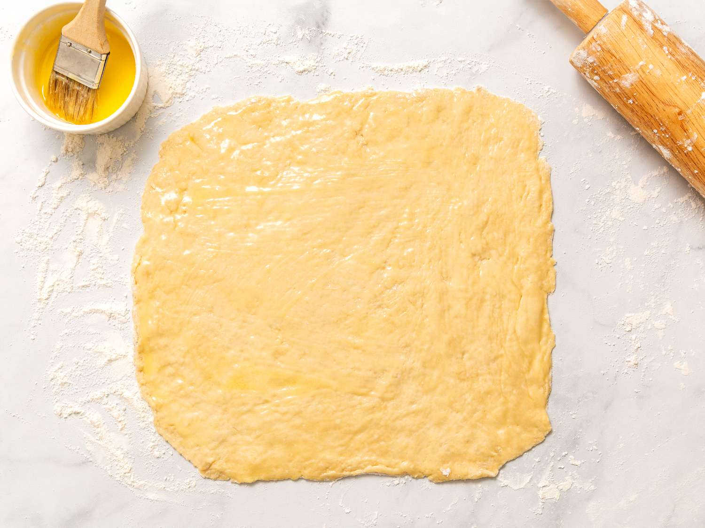
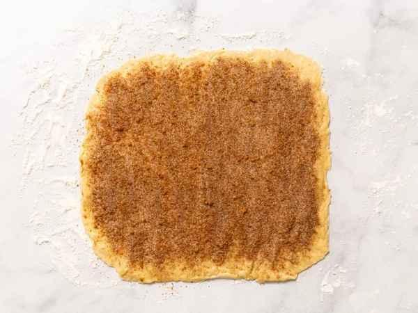
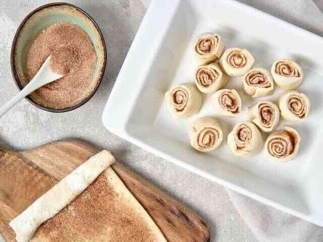
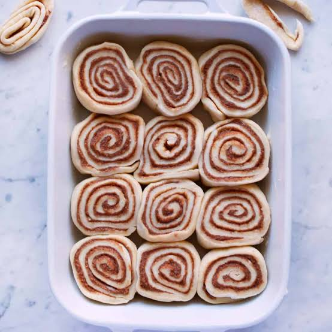
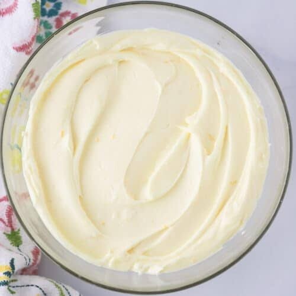
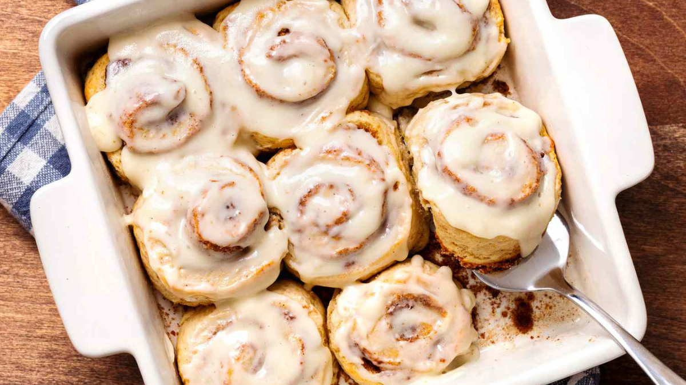

These cinnamon rolls are quick to make from scratch with no yeast, proofing, or kneading necessary! Just the thing for a delicious breakfast treat. They’re best enjoyed the day that they’re made.
Satisfy your sweet tooth first thing in the morning with these quick cinnamon rolls. There’s no yeast required, so they’re perfect for beginner bakers or anyone short on time (or patience).
These from-scratch cinnamon rolls are easy to make with ingredients you likely already have on hand. The dough comes together with flour, sugar, baking powder, butter, and milk, then gets filled with cinnamon and sugar and topped with a simple cream cheese frosting.
Store these cinnamon rolls in an airtight container in the fridge for up to a week. If you want to keep them longer than that, consider freezing them. To freeze baked cinnamon rolls for up to three months, you’ll want to double wrap them for complete protection: Wrap each cinnamon roll in one layer of storage wrap followed by one layer of aluminum foil. Thaw in the fridge overnight and reheat in the microwave or oven.
Gather all ingredients. Preheat the oven to 400 degrees F (200 degrees C). Brush an 8-inch square baking dish with 1 tablespoon of the melted butter.

To make the dough: Whisk flour, white sugar, baking powder, and salt together in a large bowl. Work 3 tablespoons softened butter into flour mixture using your hands until butter is lentil-sized.

Pour milk into flour-butter mixture and stir with a rubber spatula until a soft dough forms.

Turn dough out onto a well-floured work surface and roll dough into a 10-inch square. Brush surface of dough with remaining 2 tablespoons melted butter.

To make the filling: Whisk ¼ cup white sugar, brown sugar, and cinnamon together in a small bowl. Sprinkle 1 tablespoon cinnamon-sugar mixture in the bottom of the prepared baking dish. Sprinkle remaining cinnamon sugar over butter-brushed dough.

Roll dough around filling to form a log; cut log into 9 rolls about 1-inch wide; place rolls, cut-side up, in the prepared baking dish.

Bake in the preheated oven until rolls are puffed and lightly golden, 20 to 25 minutes.

To make the frosting: Beat powdered sugar, cream cheese, ¼ cup softened butter, and vanilla extract together in a bowl until frosting is smooth.

Top hot cinnamon rolls with cream cheese frosting.
